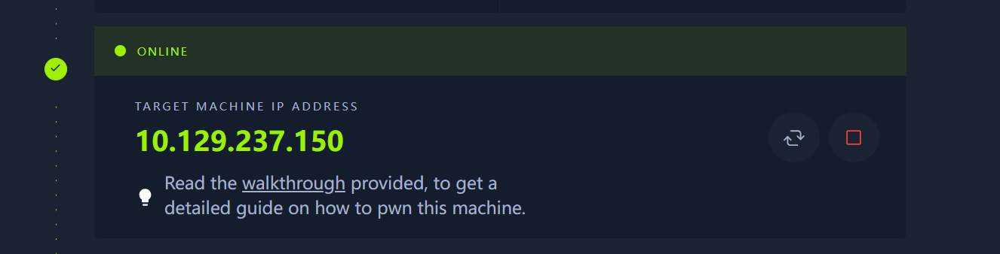
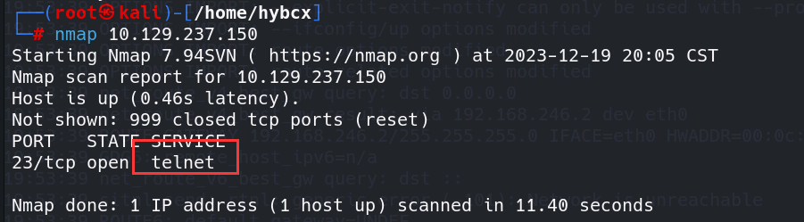
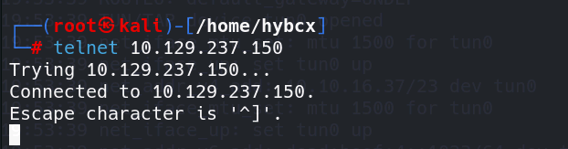
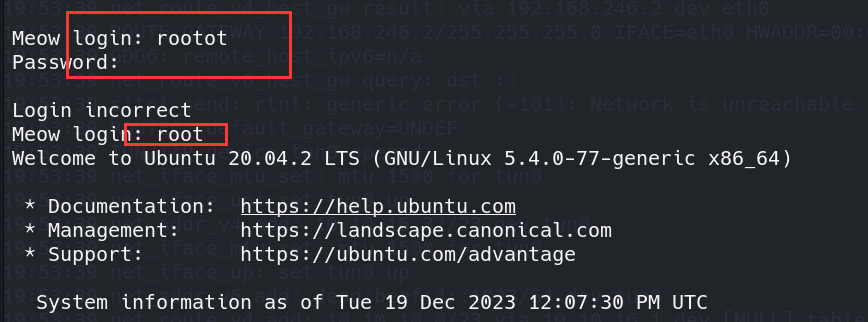
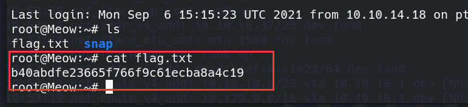
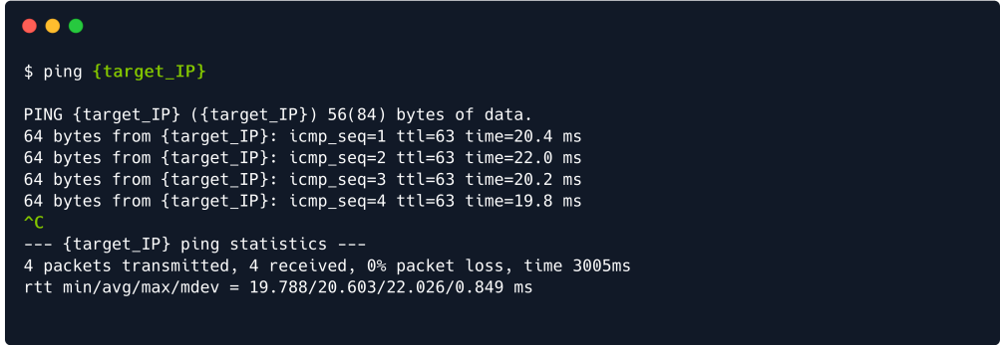
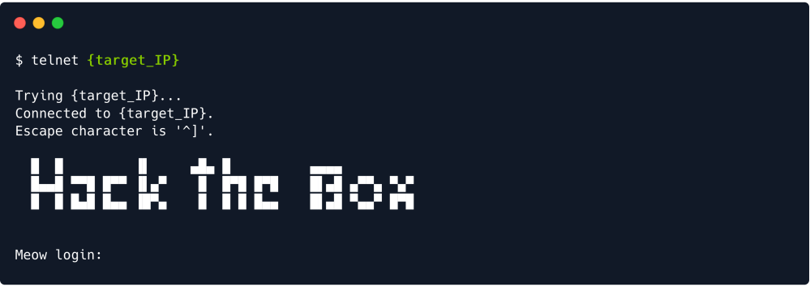
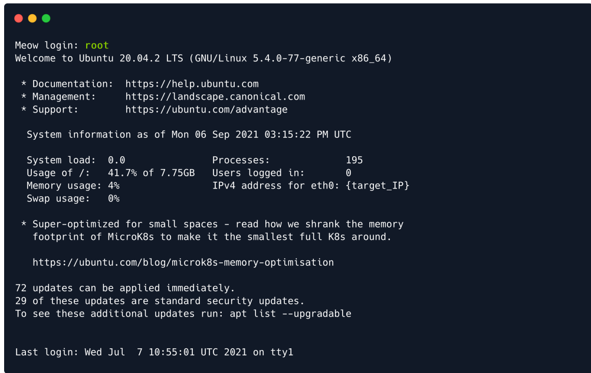
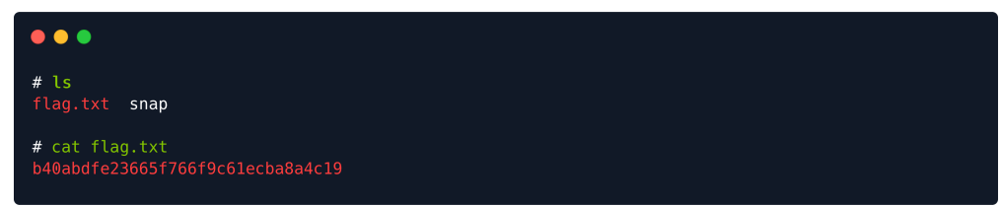

HTB-Meow
最后更新时间:
文章总字数:
预计阅读时间:
0x01 前言
HTB靶场也是早有耳闻，但是也没怎么做，现在想着先把免费的做了，等到寒假有大把时间在PIN个账号好好干！不过还有thm，忙不过来啊唉
HTB搭建参考：【HTB】Meow
0x02 Meow
连接好后先创建实例

Task 1
What does the acronym VM stand for? --VM这个缩写代表什么
很明显是虚拟机的缩写->Virtual Machine
Task 2
我们使用什么工具与操作系统交互，以便通过命令行发出命令，例如启动 VPN 连接的工具？它也称为控制台或外壳。
答案：terminal
Task 3
我们使用什么服务来建立与 HTB 实验室的 VPN 连接？
答案：openVPN
Task 4
我们使用什么工具通过 ICMP 回显请求来测试与目标的连接？
答案：ping
Task 5
用于查找目标上开放端口的最常用工具的名称是什么？
答案：nmap
Task 6
在扫描过程中，我们在端口 23/tcp 上识别出哪些服务？
答案：Telnet（远程登录服务）
当然此处还可以通过kali来验证一下

Task 7
什么用户名能够使用空白密码通过 telnet 登录目标？
答案：root
我们用kali验证一下

在linux系列的操作系统中，最高权限为root账户，我们输入随机字符作为账户进行登陆时 会提示我们输入密码，接着我们改用root账户进行登陆，发现使用root账户可以直接登陆而不需要输入密码：

Task 8
提交flag，我们在Telnet远程连接之后看看对方系统有什么提示

直接拿到flag
0x03 后记
这里通关完之后发现靶机还自带个walkthrough，就是wp之类的，我们看看大佬对此的看法：
这里先是介绍了最开始渗透的步骤：
1 | |
接着告诉了我们拿到靶机IP应该如何做：
1 | |
接下来向我们介绍了枚举这一步骤中用到的工具：
1 | |
接着向我们介绍了nmap扫描到靶机端口后的做法，以及此举的重要性：
1 | |
接下来就是nmap的用法及思路了，这里就直接照搬了
在我们的VPN连接成功建立之后，我们可以ping目标的IP地址，看看我们的数据包是否到达目的地。您可以从起始点获取当前目标的IP地址Lab的页面，并在输入ping命令后将其粘贴到终端中，如下所示。

在目标成功回复了四次之后，我们可以确定我们的连接已经建立并稳定。我们可以通过在键盘上按下CTRL+C组合键来取消ping命令，这将在终端中显示为上方绿色标记的^C。这将使终端标签返回给我们，我们可以继续下一步操作——扫描目标的所有开放端口，以确定其中运行的服务。为了启动扫描过程，我们可以使用以下带有nmap脚本的命令。
nmap代表网络映射器，它将向目标的端口发送请求，希望得到回复，从而确定所述端口是否打开。一些端口默认由特定服务使用。其他可能是非标准端口，因此我们将使用服务检测标志-sV来确定已识别服务的名称和描述。
文本中用绿色和大括号{}标记的部分是对输入的替代。在这种情况下，您需要将{target_IP}部分替换为您自己目标的IP地址。

在扫描完成后，我们识别到端口23/tcp处于开放状态，运行着telnet服务。通过进行快速的谷歌搜索，我们了解到telnet是一种用于对网络上其他主机进行远程管理的旧服务。由于目标正在运行此服务，它可以接收来自网络中其他主机（如我们自己）的telnet连接请求。
通常，telnet的连接请求配置了用户名/密码组合以增加安全性。我们可以看到对于我们的目标，情况是这样的，因为我们遇到了一个Hack The Box的横幅，并且目标要求我们在继续远程管理目标主机之前进行身份验证。

为了继续进行操作，我们需要找到一些有效的凭据，因为在目标上没有其他开放的端口可供我们探索。
这里对Foothold这个专有名词解释一下：
1 | |
有时，由于配置错误，一些重要的帐户可能会被留有空密码以提高可访问性。这在某些网络设备或主机中是一个重要问题，使它们容易受到简单的暴力攻击，攻击者可以顺着尝试登录，使用一系列用户名而没有密码输入。一些典型的重要帐户具有不言自明的名称，例如：
- admin（管理员）
- administrator（管理员）
- root（根用户）
尝试使用这些凭据手动输入它们到终端，希望其中之一存在并具有空密码，是一种直接的方法，当主机请求时。如果列表较长，我们可以使用脚本自动化此过程，向其提供一个用于用户名和一个用于密码的单词列表。
通常，用于此任务的单词列表包括典型的人名、缩写或以前数据库泄漏的数据。就目前而言，我们可以手动尝试上述这三个主要用户名。

前两个似乎对我们来说并不幸运。当事情看起来很糟时，保持坚持很重要。除非我们尝试所有可能性，否则我们无法成功。让我们尝试最后一个。

成功了！我们已经成功登录到目标系统。现在，我们可以继续使用ls命令查看我们降落的目录周围。有可能我们会找到我们正在寻找的内容。

在这种情况下，flag.txt 文件是我们的目标。大多数Hack The Box的目标都会有这样的文件，其中包含一个称为flag的哈希值。这些目标文件的命名约定因实验室而异。例如，每周和已退役的机器将有两个flag，分别是user.txt和root.txt。CTF目标和其他实验室将有flag.txt。挑战大多数情况下不会包含一个实际的文件，而是在你解决它时提供flag的片段，这些片段被嵌入到挑战中得更均匀一些（比如文本隐藏在图像中等）。
你可以使用 cat 命令读取文件，以在终端中显示哈希值。将flag复制并粘贴到Starting Point实验室的页面上将赋予你对该机器的所有权，完成你的第一个任务。
看了上述的walkthrough，很有收获，大佬的总结就是精辟！